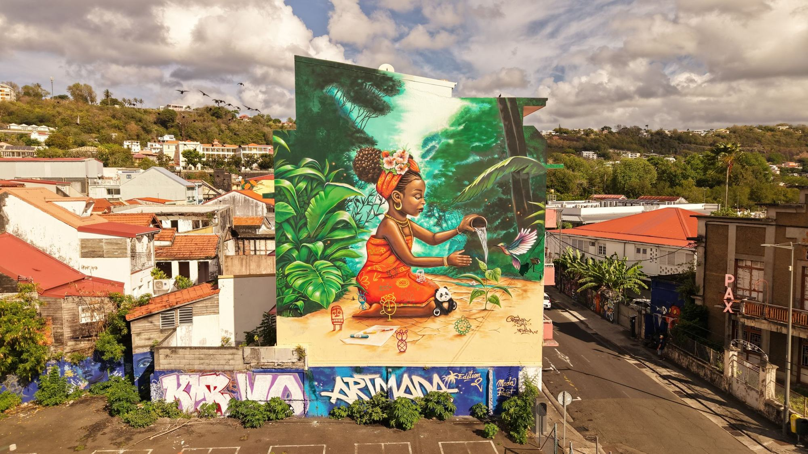
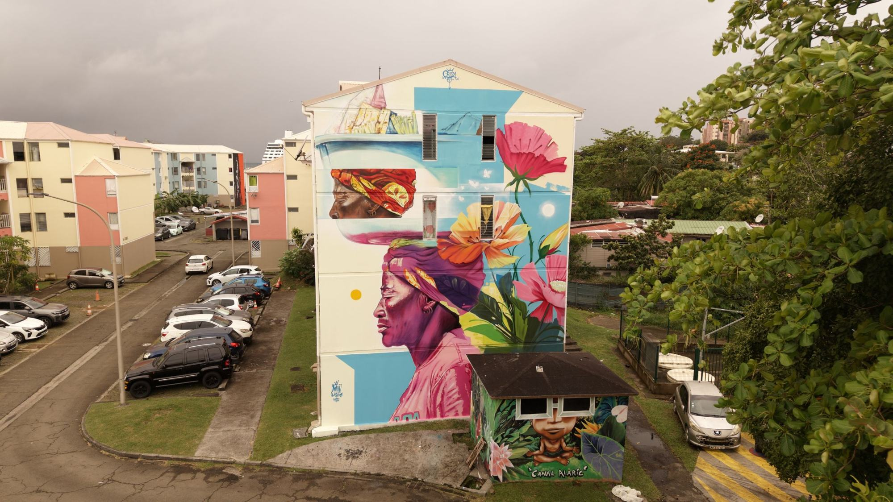

Self-guided walk
The murals of editions #1 and #2, on foot, at your own pace, with the map. Free.
Open the map
25 Jan → 4 Feb 2027
ARTMADA #2, 1–11 February 2026: the murals, the jam and the block party in Fort-de-France.
The video loads from YouTube when you click. Watch on YouTube
“In a time of social, military, climate and digital fatalism, is another way possible?”
The theme of edition #3, written by Xän for the Mada Paint collective
Read the themeMurals painted live on neighbourhood walls, workshops, breakdance shows, DJ nights and a block party. Every edition, artists from Martinique, the Caribbean and beyond transform Fort-de-France, together with the people who live there.
Editions #1 (2024) and #2 (2026) combined.
They stay on the walls. You can see them all year round, on foot, for free.
The murals of editions #1 and #2, on foot, at your own pace, with the map. Free.
Open the map2 hours with a member of the collective, for a group of up to 25: schools, associations, companies.
Request a dateSaturdays, 10am to 12pm, 8 places. Try it on a real wall, then paint your own panel. With Doudou Style, at Urban Studio, Village de la Poterie, Les Trois-Îlets.
Book
75 volunteers brought ARTMADA #2 to life. Driving artists, welcoming visitors, taking photos, helping on the walls: even a few hours make a difference.
Become a volunteerWithout them, the festival could not exist.
Ville de Fort-de-France · Collectivité Territoriale de Martinique · CACEM · DAC Martinique · Comité Martiniquais du Tourisme · Ozanam · SOAME · Régie des Transports de Martinique · Caribloc · Seigneurie Martinique · Papeterie Discount · ARTI · RED by SFR · NRJ · CIS Martinique · Urban Studio
Become a partner